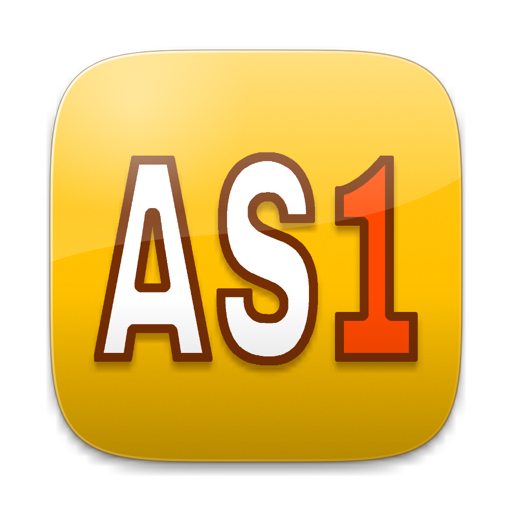

Beta for invited testers
Abba Schedule 1
Film and TV scheduling for Mac and Windows: breakdowns, stripboards, a shooting calendar, Day Out of Days, and reports you design yourself.
A Mac with Apple silicon (M1 or later) and macOS 13 Ventura or newer. Intel Macs aren't supported yet.
Windows 10 (version 1809 or later) or Windows 11, 64-bit.
Installing
On a Mac
-
Drag it to Applications
Open the downloaded disk image and drag Abba Schedule 1 onto the Applications folder.
-
Open it once, and let macOS stop it
This beta isn't signed with an Apple Developer ID yet, so macOS says it can't check the app for malware. Click Done, not Move to Trash.
Click Done. -
Within the hour, allow it in System Settings
Open System Settings › Privacy & Security, scroll down to Security, and click Open Anyway beside “Abba Schedule 1”. The button is only there for about an hour after you tried to open the app; if it's gone, open the app again first.
Scroll down to Security, then click Open Anyway. -
Confirm it
Enter your Mac's password or use Touch ID, then click Open Anyway once more. Abba Schedule 1 opens, and from then on it opens like any other app.
Click Open Anyway.
You only do this once for each new beta. On macOS 13 or 14 you can instead Control-click the app in Applications and choose Open.
On Windows
-
Run the installer
Open the downloaded “Abba Schedule 1 Setup” file.
-
Get past “Windows protected your PC”
This beta isn't signed yet, so Windows SmartScreen stops it. Click More info, then Run anyway.
-
Install for yourself
Choose Install for me only, which needs no administrator password, and follow the steps. Abba Schedule 1 is then in the Start menu, and your .as1 schedules open in it.
For a new beta, run its installer the same way: it replaces the one you have, and your schedules and templates stay as they are.
Getting started
- A demo to explore AS1 opens on a new, empty schedule. File › Open Demo Schedule opens “Cabin by the Lake”, a complete example to try things on.
- Bring your Movie Magic schedules File › Open reads Movie Magic Scheduling 6 files (.msd) as a new AS1 schedule, and your .msd is never changed. File › Export as Movie Magic File goes the other way.
- Your last ten saves are kept Each schedule's earlier versions go to the Backups folder in “Abba Schedule 1” in your home folder. File › Restore from Backup… brings one back.
Found a problem?
Bugs, confusing bits, anything that slows you down. Say what you were doing, what happened and what you expected. A screenshot or your .as1 file helps a lot.
Email feedback